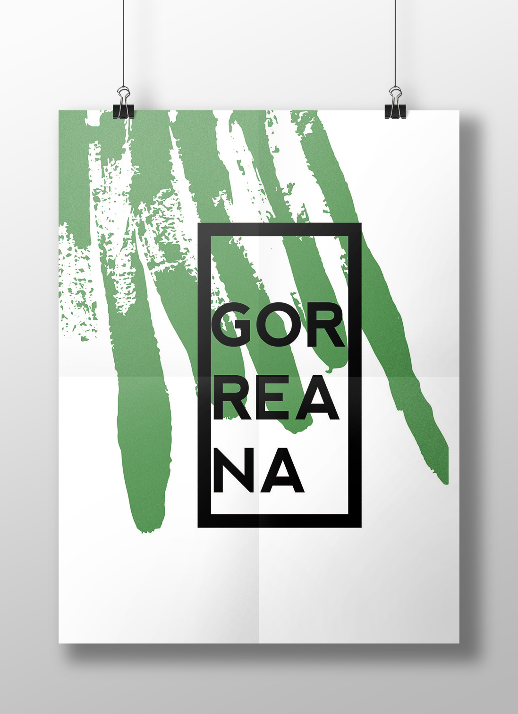
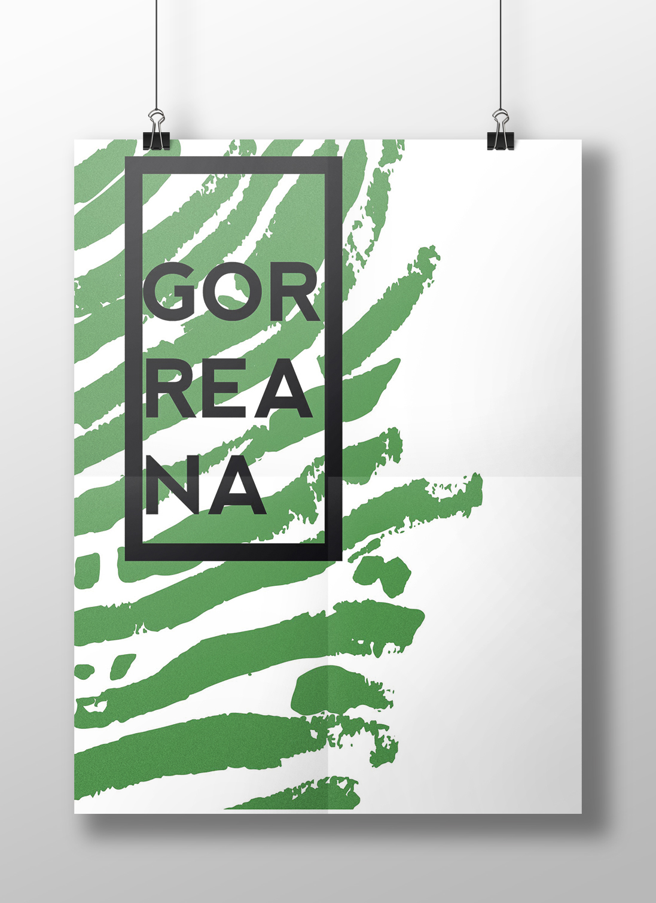
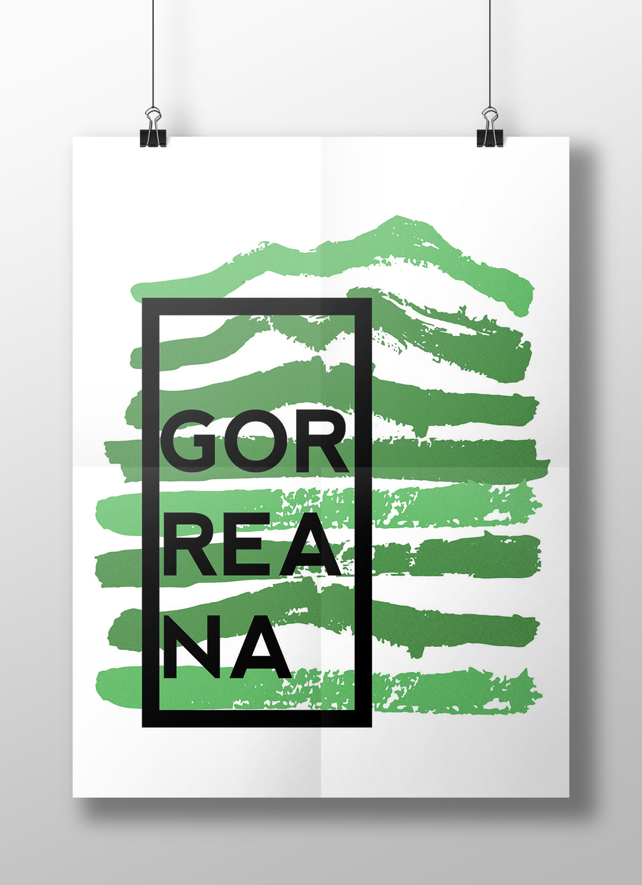
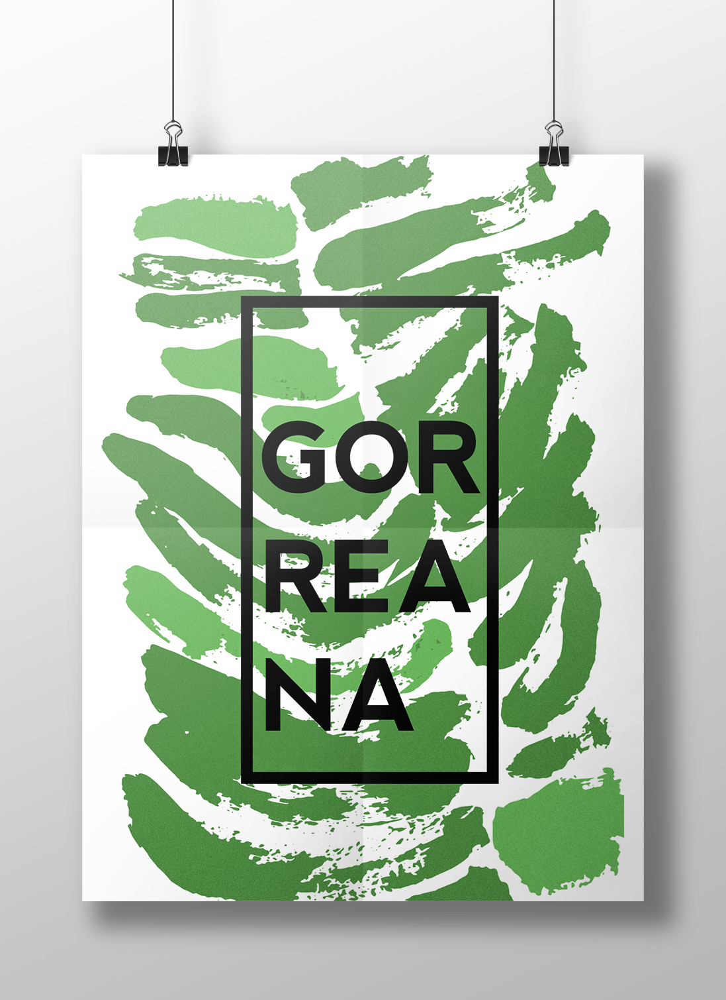
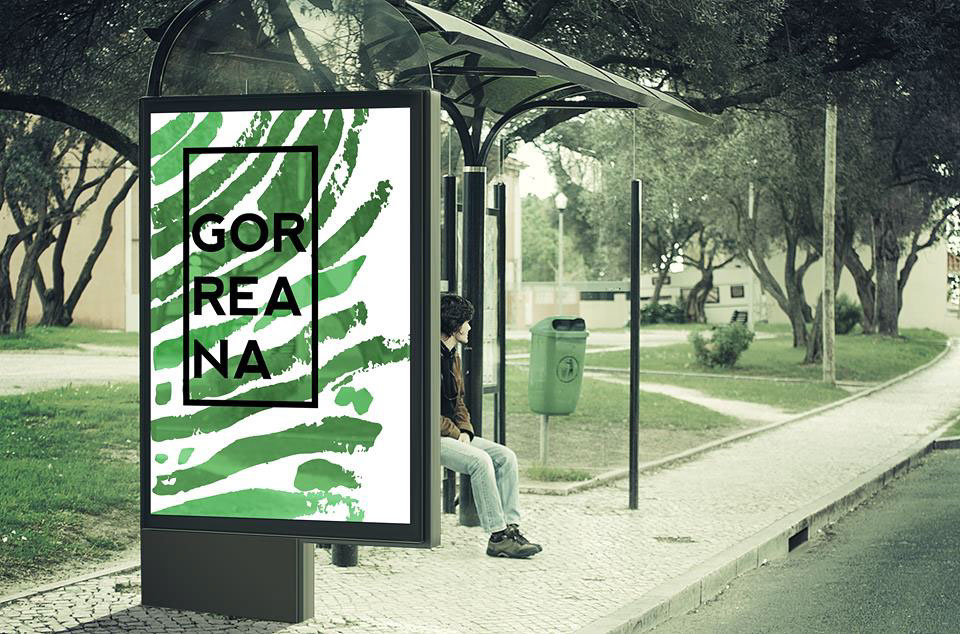
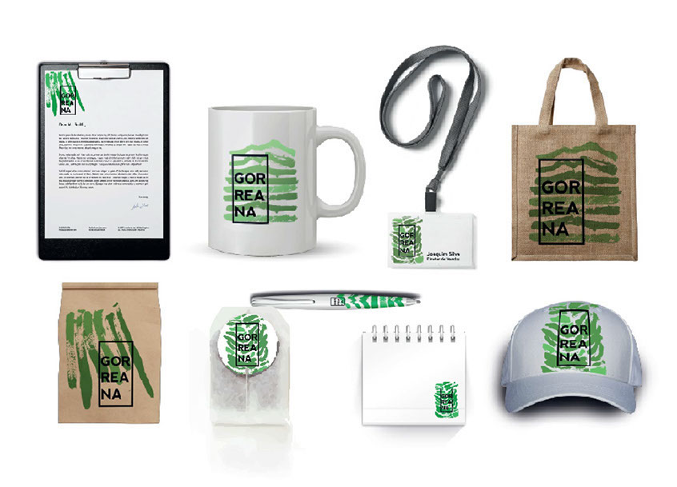

GORREANA
Third Year of University
Poster 1 Application in a Mockup
Poster 2 Application in a Mockup
Poster 3 Application in a Mockup
Poster 4 Application in a Mockup
Poster 1 Application in a Mockup of a Mupi
Different applications in a Mockup
It was intended to create a visual identity that could only represent the location of Gorreana (Azores). As its main feature is the existence of tea plantations we focused on the cuts that they make over the place. We pretended to represent an image to show its characterization, its strong and dense form with narrow paths between the plants. At the same time we wanted to keep its natural and irregular aspect, since it is something connected to nature. So we came with a number of ways to retract the crop using acrylic paint and brush. He created a kind of logo that is present in all the posters with different locations.

© Faculdade de Belas Artes da Universidade do Porto | 2016 | Portefólio Tânia Ramos